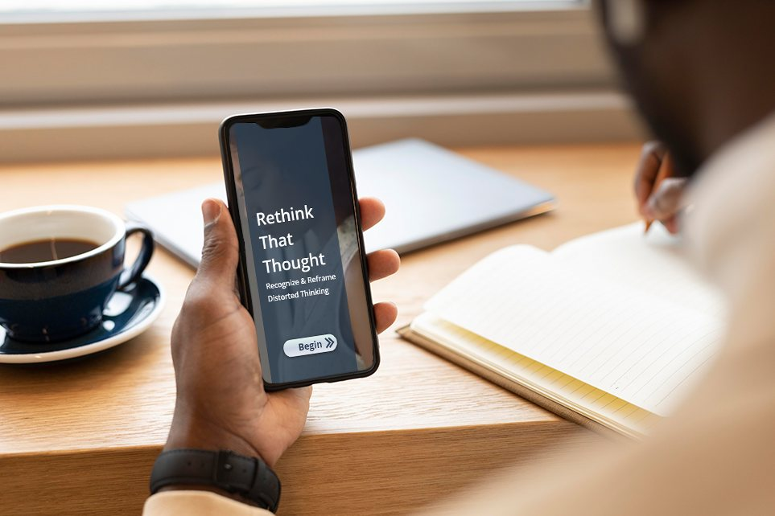
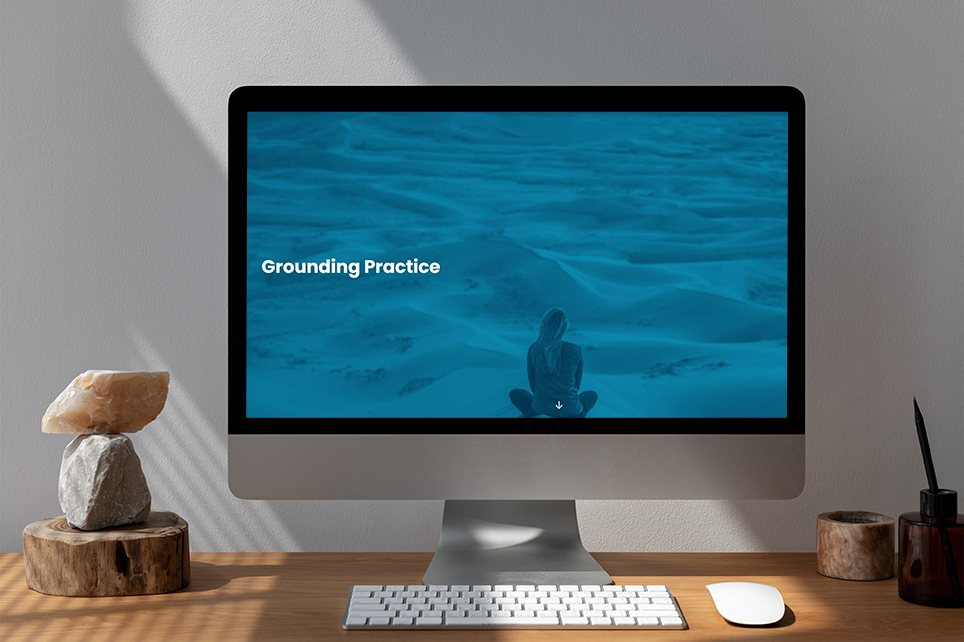
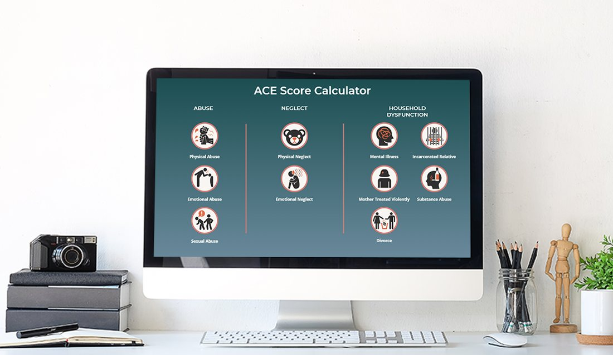
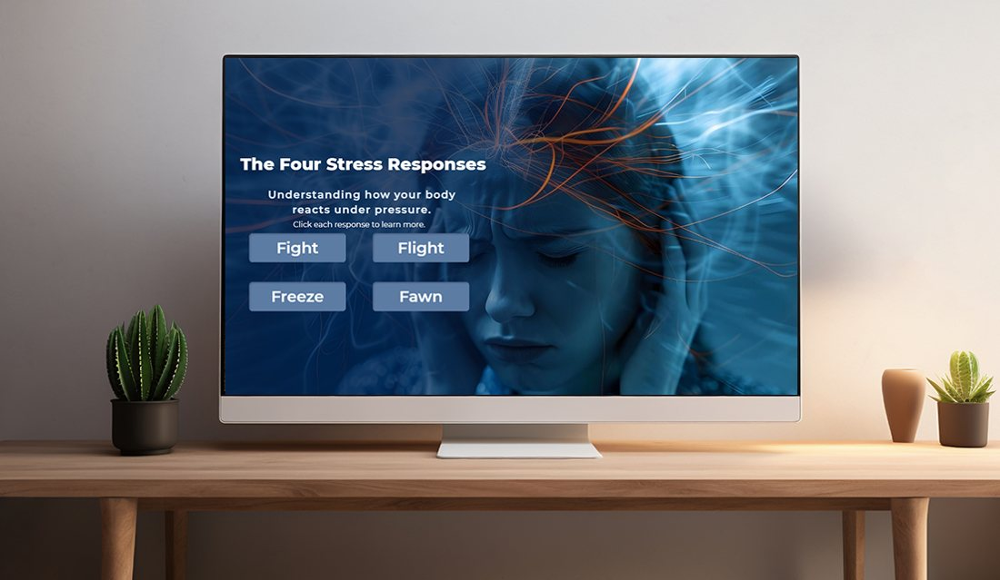
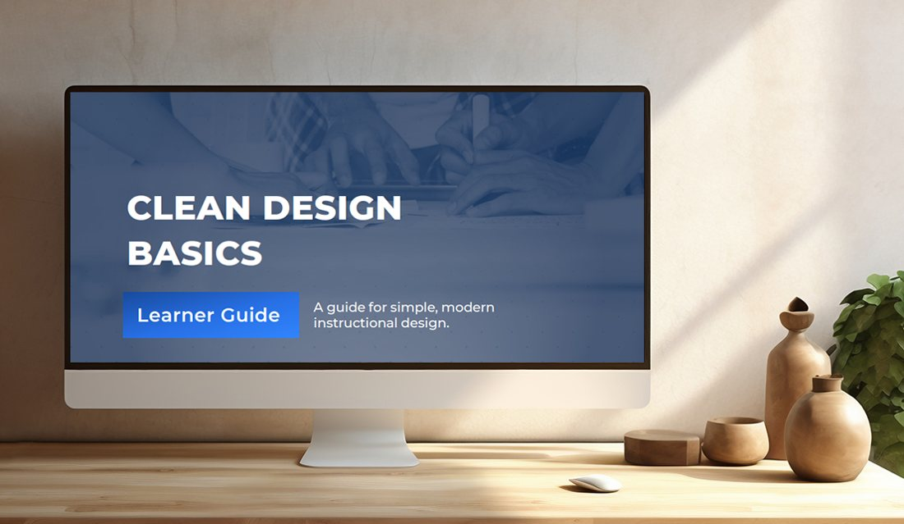
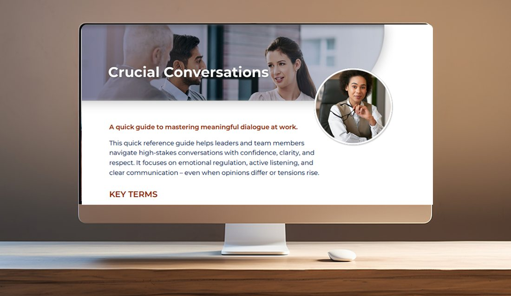

Interactive Video Résumé
An interactive introduction that blends storytelling, video, and learner-driven exploration.
Explore project ↗Hi, I’m Merci. I create thoughtful, engaging learning experiences that bring ideas to life and make complex things feel human.

I’m a senior instructional designer who believes learning should feel clear, useful, and memorable. I combine thoughtful strategy, visual storytelling, and interactive design to turn information into experiences.
My work spans scenario-based learning, digital tools, microlearning, and resources that support people in real moments.
This is draft introduction copy. We can replace it with your exact Squarespace bio.
A collection of interactive experiences, creative learning solutions, and tools built for real people.
An interactive introduction that blends storytelling, video, and learner-driven exploration.
Explore project ↗A practical learning toolkit focused on mindful leadership and management.
Explore project ↗
A reflective digital learning experience designed around reframing thought patterns.
Explore project ↗
A grounding practice experience with an approachable, learner-centered format.
Explore project ↗
An interactive calculator designed to support learning and reflection.
Explore project ↗A digital storytelling sample created for a giving campaign.
Explore project ↗An interactive self-care learning story.
Explore project ↗
An interactive exploration of four common stress responses.
Explore project ↗A digital learning sample on community protective factors.
Explore project ↗
A four-page guide to layout, typography, hierarchy, and visual consistency.
View guide ↗
A quick reference for navigating high-stakes conversations with clarity and respect.
View guide ↗Interested in connecting about instructional design, learning experiences, or a new opportunity?
Get in touch ↗Contact email is a placeholder; update before publishing.